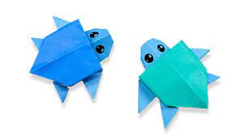

Origami Designs
About us
follow us
click to know how this turtle make
 click to know how this dragon make
click to know how this dragon make
Interesting facts of turtle
- Green sea turtles are what they eat!
- Sea turtles lay their eggs in a nest they dig in the sand with their rear flippers.
The group of eggs is called a clutch.
- Sand temperature is very important.
- Hawksbill turtles use their beaks to help extract their favorite prey.
- One sea turtle species nests during the day.
- Leatherback sea turtles have existed in their current form since the age of the dinosaurs!
- Loggerheads spend the first 7 to 15 years (average 12 years) of their lives in the open ocean.
- Sea turtles don’t retract into their shells.
- Some turtles nest in large groups, called "arribadas," Spanish for "arrival."
Only the two ridley turtles, Kemp’s ridley and the olive ridley, display this arribada nesting behavior.
- Sea turtles are deep divers and can stay underwater for long periods of time.
Interesting facts of dragon
- A dragon has: none to four legs, claws, scales and possibly spikes. Optional wings.
- A dragon can look like a snake with wings, or like lizards
- A dragon has a tail and a long neck.
- A dragon has a wide mouth with big and dangerous teeth.
- Sometimes they have horns and hair.
- A dragon can fly.
- A dragon can perhaps breathe fire (or other dangerous substances).
- A dragon has special powers.
- Some dragons live in caves.